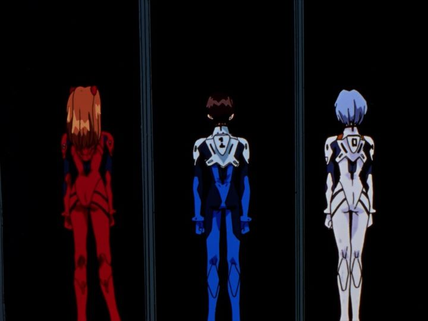

Few other anime are as fabled as the 1995 television series "Neon Genesis Evangelion." Yes, there are other "classic" shows, but none as influential and as controversal. Studio Gainax and director Hideaki Anno have done other things before and since that cemented their fame, but the first show that comes to mind when either are mentioned is always "Evangelion." In reality, has hype and age ruined the show's potential with new audiences? A big component to that question is the existence of the "Rebuild" films. One of the reasons "Evangelion" is so infamous is because it was effectively rewritten multiple times. Director Anno has be publically documented to suffer from clinical depression, and "Evangelion" portrays that in a significant (if slightly exaggerated) manner. It's integral to the plot. But with a show that was show personal to Anno, it seems natural that he would never be satisfied with it. The final episodes in particular were subject to budget and scheduling issues, attempted to be fixed with "director's cut" versions of the final episodes, feature-film sequels to give the true ending, and in 2007, the beginnings of yet another attempt to retell the story as a four-part film series (the finale of which would be released over a decade after the first film's release). With such a complicated history, wouldn't watching the newest movies be the right way to experience the story? Also consider that the original series, licensed by ADV in America and subject to bizarre copyright issues, has been out of print since the early 2010's. I vididly recall boxsets of the DVD being sold for as low as $30 online when I was first collecting anime on home video, but just starting my collection at a time when Bandai Entertainment USA was going out of business, I had other things to purchase first. Ultimately, I would spend over $100 on a used DVD set almost a decade later, considered a fair deal at the time. Netflix announced they had "rescued" the series to stream in 2019, and when insisting on a new English dub, it almost ensured two things: the original and iconic ADV English dub would likely never be released again for a variety of reasons, and with Netflix, a home video release never, ever, come to be. Even if the show was worth it, seeking it out legally would be a massive challenge to the modern anime fan, despite its legacy. To summarize this review: 1995's "Neon Genesis Evangelion" is still worth watching, even today. The shock of its ambitious themes is still effective. By my God, it is a bizarre mess, especially for the first half of the 26-episode series.The story starts in 2015 (remember, this was 20 years into the future at the time of broadcast). The world has seen the apocolypse, destroying most of the human race in what was called "the Second Impact." Large monsters called "Angels" come down to Earth periodically to further attack the surviving humans, many of whom live in artificial cities underground. International government funding is channeled into NERV, a organization built to be humanity's last hope for defense, using science and technology to build the Evangelion mecha robots. These robots, for unexplained reasons, must be piloted by emotionally vulnerable teenagers: Shinji Ikari is the son of the cold director of NERV, and gets called in specifically to pilot the robot, minutes after being told about its existence. Seeking his father's approval, Shiniji gets in the robot, and the show becomes a "monster-of-the-week" science fiction cartoon, not unlike many other mecha shows anime is known for. But it is clear other things are at work in this universe. Why are these monsters called "angels," a term typically used for saviours of humanity? Gendo Ikari and the committees he meets seem to already know more about the angels and humanity's situation than they let on. What caused the Second Impact? What will cause the foretold Third Impact? What exactly are the Evangelion robots, these humanoid-like robots that seem to have a mind of their own beyond that of their pilots, and appear to bleed red liquid like bood when they are stabbed or torn apart? Who is Rei Ayanami, the emotionless girl who Gendo treats with more fondness than his real son?If you expect answers for all of the questions "Evangelion" brings up, you won't get them, at least not in the main series. For the first dozen or so episodes, the show will occasionally offer a hint or two of larger things, but will otherwise focus on being a fairly standard action show. And not a particularly good one at that. Despite the threat involving the entire world, the show is almost entirely set in Tokyo and NERV headquarters, ruining any sense of scope. Pacing is an issue. Shinji himself, the heroic lead, is not like any other hero you've seen in anime: he doesn't have any confidence. He doesn't want to pilot the big cool robot and smash things to save the world. Yes, there are real people with insecurites like Shinji, but despite having genuine character growth much stronger than most other anime, his characteristics have made him a laughing stock of otaku culture.Things only get worse when Asuka is introduced. A new pilot from Germany, she's a hot-blooded teenage girl to act as an antithesis to Shinji: loud, proud, abnoxious, violent, and a bit of a tsundere flirt. After she enters the scene, several episodes just involve her and Shinji trying to get along, resulting in absolutely bizarre episodes that could only be classified as comedy-filler: not essential to the plot, and not at all fitting the serious nature of the show. At first, I watched the show in disbelief, only thinking about how much of a mess it was, clearly like how all of the main characters were emotionally broken in one way or another. Anno's unique directing style still came through, but I could only describe the directing and writing effort as trash.This was also true for the production. The animation seemed good during action scenes involving the Eva's, but relies heavily on static talking shots for the vast majority. And the English dub... in those first few episodes, I heard a dub that ranks among the worst I have ever heard. Watching the original Japanese dub is mandatory if you want to prevent yourself from laughing throughout those early episodes.... but about halfway through the series, things come around as revalations reveal themselves. Again, most of the questions it presents never do get explained. But the show immediately becomes more interesting. Everything, from the animation to the English dub, seems to find its footing here. And even if the lore of the story doesn't fully make sense, we do get the full emotional trauma the show is known for. Asuka's need to be recognized. Rei's need for being valued. Misato's struggle with responsibility and appearances. And Shinji's search for meaning in life. I'm greatly simplifying the characterizations here: virtually every character in the show is an emotionally complex and broken person, more complex than any rendering in entertainment that I've seen.In some ways, it's frustrating (Gendo seems able to sleep with multiple women to get what he wants, despite a cold and cruel personality, reducing said women to shriviling piles when ignored). Let's expand on that: while all the women of the show get the worst of it, even Shinji isn't immune - at one point, he envisions the three women of his life nude, confronting him, asking what he wants, smiling as they offer themselves. Depending on your perspective, these attempts in covneying the human psyche are either relatable or disgusting, but most certainly true. The core theme of the show is how we all simply want to find a place of belonging, a purpose of living, and it comes down to the complex interactions we have with those around us.  Which brings us to that controversal set of final episodes. Four out of six of the last episodes have director's cuts, but not the last two. Those episodes are where most of the revelations come out, even though a lot is missing. Should you just watch the director's cut version instead of broadcast? You can for a couple extra minutes of content per episode, but it expands on the human emotions rather than answering any questions. The show is less interested in telling a complete story as it is conveying what it means to be human. The original broadast versions aren't worth throwing away, even though there are a couple scenes that literally stretch on for over a minute on a still image (likely because alternative scenes couldn't be finished in time), and previews for the next episode are reduced to storyboard pencil sketches. The intrigue from these episodes will tempt you to watch both, no matter what you do, so I would almost recommend watching the original first and watched the extended versions after to get the most of any new content. Curiously, the final "director's cut" episode has a preview for what occurs in the feature film sequel, no longer for the broadcast finale.And the final two episodes... at risk of spoiling the ending, they take place at the end of the world, inside the minds of the lead characters, as they look inside themselves and each confront their demons. Production issues abound: almost entirely rendered using static images and narratted monologue, they look as though they could have been animated within days. It uses digital warping and abstract colors and images to convey the sense of confusion and anxiety. The second half of episode 26 actually has some real animaion, experimental in practice, that comes across better than any animation in the rest of the show. It also has a lengthy sequence showing what "Evangelion" would have been like had it been a normal high-school anime. Bizarre. Finally, it tries to offer a happy ending, one to assure those that suffer the depression that Anno likely has: "your life is meaningful," with a crowd applauding the conclusion. All while the viewer ponders what really happened in between episodes 24 and 25 to lead to what appears to be humanity's destruction and salvation. Even from the first episode, which introduces a scary version of the future, "Neon Genesis Evangelion" is mentally and emotionally exhausting and draining. By itself, it can cause a viewer to feel confused and depressed days after finishing. I legitimately needed a break after watching it, or at least needed to watch something lighter and more cheery immediately afterwards. Few animated shows can be this challenging, either purposely or by accident, and whether or not you like to be challenged will heavily influence your opinion on this series. While the animation may be a bit dated overall, the visuals still stand out. Character designs are memorable, and the mecha designs and their biological inspirations are iconic. The Angels are well imagined. Several shots of violence, even if between robots, are incredibly impressionable, and worthy of a poster on your wall. The show has plenty of other pseudo-religous imagery to make the show seem more important than it really was... well, for the 1990's, that the show's setting and characters are so easy to remember is a testament. The music still stands up well too, with memorable battle themes, and an ending theme of the English song "Fly Me To The Moon" in different versions per episode. And the opening song, "A Cruel Angel's Thesis," is still one of the most popular songs in Japanese karaoke decades later. Because it's a fun song.One could easily write a thesis on "Neon Genesis Evangelion" for its content. But if you don't want to rewatch the story in different forms... it's hard to recommend the tv series over the "Rebuild" films, starting with "Evangelion 1.11 - You Are (Not) Alone." In those movies, the animation is modernized and vastly improved. Anno's directing style is more confident. The story cuts out filler, and has great pacing because of it. The films are an improvement over the original series in almost every way. But each time Anno recreates "Evangelion," he changes it, usually in subtle ways until it reaches entirely different endings. And for something so personal and emotionally complex as this, part of the fun is in analyzing and deciphering what the artist behind it is trying to say each time, and theorizing why certain changes were made. Those pencil-sketch final episodes are an ending you only get with the tv series: it might not be a great ending, but it is absolutely worth watching. At this point, a license rescue for home video in English seems out of the question, and the way it looks, waiting for a Bluray of the new Japanese transfer isn't absolutely worth it (although YouTube videos suggest the quality difference makes it look brand new). To guarantee a chance to watch the original English dub, it's worth the effort to seek out the old ADV DVDs. At the very least, watching the original show sets you up to watch the finale film "The End of Evangelion." Boy, if you thought the tv series was crazy...Update: On June 21, 2019, Netflix officially released their version of the original "Neon Genesis Evangelion" show, including the film "End of Evangelion." It doesn't affect the score in this review, but I do want to compare their new English dub, with a controversal decision to use new actors. Even a diehard fan should recognize the original dub early in the series was horrible, and not surprisingly, the Netflix dub fairs better than that. And for new viewers who have never seen the original dub, they won't notice any significant issues. But compared to the original dub's quality near the end of the series, and esepcailly compared to those same actors in the "Rebuild of Evangelion" films, Netlfix's dub isn't good. While most of the characters aren't significantly different, Shinji in particular sounds much more like a little girl, distracting compared to the original cracking adolescent voice. Overall, all the actors seem a little bored and wooden in comparsion to the original. And several subtle translation changes in the script, both in the show and "End of Evangelion," will disappoint and confuse old fans significantly. Did I mention the multiple versions of the iconic "Fly Me To The Moon" were all removed, replaced with another orchestral track, for the ending theme?Simply put, Netflix's release is an expected disappointment, but when the show has been legally unavailable for so long, beggars can't be choosers. At least the new digital remaster looks significantly better than the old DVDs, especially compared to "End of Evangelion"'s US release (although not nearly as big as an improvement for "End of" as you would hope), which might be enough of an excuse to revisit it. Although, even then, that sharpness for all the content almost makes it look uglier, showing all the limitations of Japan's cel animation pre-2001. Lucky to have a used copy of the ADV dub on DVD, I don't plan to get rid of it any time soon.
- "Ani" More reviews can be found at : https://2danicritic.github.io/ Previous review: review_Nausicaa_of_the_Valley_of_the_Wind Next review: review_Neon_Genesis_Evangelion_-_Death_and_Rebirth